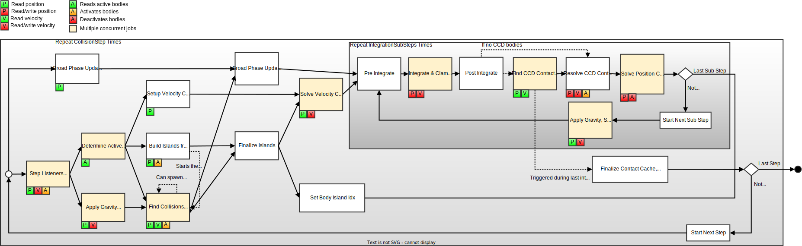

|
Jolt Physics
A multi core friendly Game Physics Engine
|
|
Jolt Physics
A multi core friendly Game Physics Engine
|
For demos and videos go to the Samples section.
We use a pretty traditional physics engine setup. We have rigid bodies (Body) that have attached collision volumes (Shape). Bodies can either be static (not simulating), dynamic (moved by forces) or kinematic (moved by velocities only). Each moving body has a MotionProperties object that contains information about the movement of the object. Static bodies do not have this to save space (but they can be configured to have it if a static body needs to become dynamic during its lifetime by setting BodyCreationSettings::mAllowDynamicOrKinematic).
Bodies are inserted into the PhysicsSystem through the BodyInterface. The body interface comes in two flavors: A locking and a non-locking variant. The locking variant uses a mutex array (a fixed size array of mutexes, bodies are associated with a mutex through hashing and multiple bodies use the same mutex, see MutexArray) to prevent concurrent access to the same body. The non-locking variant doesn't use mutexes, so requires the user to be careful.
In general, body ID's (BodyID) are used to refer to bodies. You can access a body through the following construct:
JPH::BodyLockInterface lock_interface = physics_system.GetBodyLockInterface(); // Or GetBodyLockInterfaceNoLock
JPH::BodyID body_id = ...; // Obtain ID to body
// Scoped lock
{
JPH::BodyLockRead lock(lock_interface, body_id);
if (lock.Succeeded()) // body_id may no longer be valid
{
const JPH::Body &body = lock.GetBody();
// Do something with body
...
}
}
When another thread has removed the body between the time the body ID was obtained and the lock, the lock will fail. While the lock is taken, other threads cannot modify the body, so it is safe to work with it. Each body ID contains a sequence number, so body ID's will only be reused after many add/remove cycles.
Each body has a shape attached that determines the collision volume. The following shapes are available (in order of computational complexity):
Next to this there are a number of decorator shapes that change the behavior of their children:
In order to speed up the collision detection system, all convex shapes use a convex radius. The provided shape will first be shrunken by the convex radius and then inflated again by the same amount, resulting in a rounded off shape:
 |
|---|
| In this example a box (green) was created with a fairly large convex radius. The shape is shrunken first (dashed green line) and then inflated again equally on all sides. The resulting shape as seen by the collision detection system is shown in blue. A larger convex radius results in better performance but a less accurate simulation. A convex radius of 0 is allowed. |
Beware: When a shape is created, it will automatically recenter itself around its center of mass. The center of mass can be obtained by calling Shape::GetCenterOfMass and most functions operate in this Center of Mass (COM) space. Some functions work in the original space the shape was created in, they usually have World Space (WS) or Shape Space (SS) in their name (or documentation).

As an example, say we create a box and then translate it:
// Create box of 2x2x2 m (you specify half the side) JPH::BoxShapeSettings box(JPH::Vec3(1, 1, 1)); JPH::Ref<Shape> box_shape = box.Create().Get(); // Offset it by 10 m JPH::RotatedTranslatedShapeSettings translated_box(JPH::Vec3(10, 0, 0), JPH::Quat::sIdentity(), box_shape); JPH::Ref<Shape> translated_box_shape = translated_box.Create().Get(); // Cast a ray against the offset box (WRONG!) JPH::RayCast ray; ray.mOrigin = JPH::Vec3(10, 2, 0); ray.mDirection = JPH::Vec3(0, -2, 0); // Cast ray JPH::RayCastResult hit; bool had_hit = translated_box_shape->CastRay(ray, JPH::SubShapeIDCreator(), hit); JPH_ASSERT(!had_hit); // There's no hit because we did not correct for COM! // Convert the ray to center of mass space for the shape (CORRECT!) ray.mOrigin -= translated_box_shape->GetCenterOfMass(); // Cast ray had_hit = translated_box_shape->CastRay(ray, JPH::SubShapeIDCreator(), hit); JPH_ASSERT(had_hit); // Ray was in COM space, now there's a hit!
In the same way calling:
translated_box_shape->GetLocalBounds();
will return a box of size 2x2x2 centered around the origin, so in order to get it back to the space in which it was originally created you need to offset the bounding box:
JPH::AABox shape_bounds = translated_box_shape->GetLocalBounds(); shape_bounds.Translate(translated_box_shape->GetCenterOfMass()); JPH_ASSERT(shape_bounds == JPH::AABox(JPH::Vec3(9, -1, -1), JPH::Vec3(11, 1, 1))); // Now we have the box relative to how we created it
Note that when you work with interface of BroadPhaseQuery, NarrowPhaseQuery or TransformedShape this transformation is done for you.
Bodies can be connected to each other using constraints (Constraint).
The following constraints are available:
Most of the constraints support motors (MotorSettings) and allow the relative position/orientation of the bodies to be driven to a particular velocity or position.
If you want to constrain a dynamic object to the unmovable 'world' you can use Body::sFixedToWorld instead of creating a static body.
Adding and removing constraints can be done from multiple threads, but the constraints themselves do not have any protection against concurrent access. We assume that constraints are owned by some object (e.g. a Ragdoll) and that object ensures that it only modifies its own constraints and contains its own synchronization logic. Constraints can be freely modified except during the physics simulation step.
Contact constraints (when bodies collide) are not handled through the (Constraint) class but through the ContactConstraintManager which is considered an internal class.
When bodies are added to the PhysicsSystem, they are inserted in the broad phase (BroadPhaseQuadTree). This provides quick coarse collision detection based on the axis aligned bounding box (AABB) of a body.
The broad phase is divided in layers, each layer has a AABB quad tree associated with it. When constructing the physics system a ObjectLayerPairFilter needs to be provided which determines which object layers collide with which other layer. If two layers don't collide, the objects inside those layers cannot collide. A standard setup would be to have a MOVING and a NON_MOVING layer, where NON_MOVING doesn't collide with NON_MOVING and all other permutations collide. This ensures that all static bodies are in one tree (which is infrequently updated) and all dynamic bodies are in another (which is updated every simulation step). It is possible to create more layers like a BULLET layer for high detail collision bodies that are attached to lower detail simulation bodies, the MOVING layer would not collide with the BULLET layer, but when performing e.g. weapon collision queries you can filter for only objects in the BULLET layer.
Since we want to access bodies concurrently the broad phase has special behavior. When a body moves, all nodes in the AABB tree from root to the node where the body resides will be expanded using a lock-free approach. This way multiple threads can move bodies at the same time without requiring a lock on the broad phase. Nodes that have been expanded are marked and during the next physics step a new tight-fitting tree will be built in the background while the physics step is running. This new tree will replace the old tree before the end of the simulation step. This is possible since no bodies can be added/removed during the physics step.
When doing a query against the broad phase (BroadPhaseQuery), you generally will get a body ID for intersecting objects. If a collision query takes a long time to process the resulting bodies (e.g. across multiple simulation steps), you can safely keep using the body ID's as specified in the Bodies section.
A narrow phase query (NarrowPhaseQuery) will first query the broad phase for intersecting bodies and will under the protection of a body lock construct a transformed shape (TransformedShape) object. This object contains the transform, a reference counted shape and a body ID. Since the shape will not be deleted until you destroy the TransformedShape object, it is a consistent snapshot of the collision information of the body. This ensures that the body is only locked for a short time frame and makes it possible to do the bulk of the collision detection work outside the protection of a lock.
For very long running jobs (e.g. navigation mesh creation) it is possible to query all transformed shapes in an area and then do the processing work using a long running thread without requiring additional locks (see NarrowPhaseQuery::CollectTransformedShapes).
The narrow phase queries are all handled through the GJK and EPA algorithms.
The simulation step PhysicsSystem::Update uses jobs (JobSystem) to perform the needed work. This allows spreading the workload across multiple CPU's. We use a Sequential Impulse solver with warm starting as described in Modeling and Solving Constraints - Erin Catto
Each physics step can be divided into multiple sub steps. There are collision and integration steps. For each collision step we run X integration steps, so if you run the simulation at 60 Hz with 2 collision steps and 3 integration steps we run:
In general, the system is stable when running at 60 Hz with 1 collision and 1 integration step.
Jolt Physics uses a right handed coordinate system with Y-up. It is easy to use another axis as up axis by changing the gravity vector using PhysicsSystem::SetGravity. Some shapes like the HeightFieldShape will need an additional RotatedTranslatedShape to rotate it to the new up axis and vehicles (VehicleConstraint) will need their new up-axis specified too.
We use column-major vectors and matrices, this means that to transform a point you need to multiply it on the right hand side: TransformedPoint = Matrix * Point.
Note that the physics simulation works best if you use SI units (meters, radians, seconds, kg). In order for the simluation to be accurate, dynamic objects should be in the order [0.1, 10] meters long and have speeds in the order of [0, 500] m/s. Static object should be in the order [0.1, 2000] meter long. If you are using different units, consider scaling the objects before passing them on to the physics simulation. Also try to ensure that all simulation takes place within 2 km from the origin to avoid floating point accuracy problems.
Each body has a motion quality setting (EMotionQuality). By default the motion quality is Discrete. This means that at the beginning of each simulation step we will perform collision detection and if no collision is found, the body is free to move according to its velocity. This usually works fine for big or slow moving objects. Fast and small objects can easily 'tunnel' through thin objects because they can completely move through them in a single time step. For these objects there is the motion quality LinearCast. Objects that have this motion quality setting will do the same collision detection at the beginning of the simulation step, but once their new position is known, they will do an additional CastShape to check for any collisions that may have been missed. If this is the case, the object is placed back to where the collision occurred and will remain there until the next time step. This is called 'time stealing' and has the disadvantage that an object may appear to move much slower for a single time step and then speed up again. The alternative, back stepping the entire simulation, is computationally heavy so was not implemented.
 |
|---|
| With the Discrete motion quality the blue object tunnels through the green object in a single time step. With motion quality LinearCast it doesn't. |
Fast rotating long objects are also to be avoided, as the LinearCast motion quality will fully rotate the object at the beginning of the time step and from that orientation perform the CastShape, there is a chance that the object misses a collision because it rotated through it.
 |
|---|
| Even with the LinearCast motion quality the blue object rotates through the green object in a single time step. |
Data needs to be converted into an optimized format in order to be usable in the physics simulation. The uncooked data is usually stored in a Settings object and then converted to cooked format by a Create function that returns a Result object that indicates success or failure and provides the cooked object. There are two ways of serializing data:
As the library does not offer an exporter from content creation packages and since most games will have their own content pipeline, we encourage you to store data in your own format, cook data while cooking the game data and store the result using the SaveBinaryState interface (and provide a way to force a re-cook when the library is updated).
The physics simulation is deterministic provided that:
If you're willing to sacrifice some performance, the last point can be mitigated. The library doesn't use any SIMD intrinsics that return an approximate result (e.g. 1/sqrt(x) or 1/x) which will differ between e.g. Intel and AMD. Furthermore, by default we compile with 'fast math' and 'fused multiply add' enabled, these will also result in differences across CPUs. You'll need to compile with 'strict math' enabled (-ffp-model=strict in clang) and disable 'fused multiply add' (see JPH_USE_FMADD). Deterministic simulation across platforms is even less likely to happen, you may need to turn off optimization altogether. There is a unit test that checks determinism, but it does not test for determinism across CPU models / platforms so no guarantees are made here.
When running the Samples Application you can press ESC, Physics Settings and check the 'Check Determinism' checkbox. Before every simulation step we will record the state using the StateRecorder interface, rewind the simulation and do the step again to validate that the simulation runs deterministically. Some of the tests (e.g. the MultiThreaded) test will explicitly disable the check because they randomly add/remove bodies from different threads. This violates the first rule so will not result in a deterministic simulation.
The job graph looks like this:

Note that each job indicates if it reads/writes positions/velocities and if it deactivates/activates bodies. We do not allow jobs to read/write the same data concurrently. The arrows indicate the order in which jobs are executed. Yellow blocks mean that there are multiple jobs of this type. Dotted arrows have special meaning and are explained below.
This job will refit the AABBs of the broad phase. It does this by building a new tree while keeping the old one available as described in the Broad Phase section.
This job will simply swap the new tree with the old tree. The old tree will be discarded at the beginning of the next PhysicsSystem::Update call so that any broad phase query can continue to run.
You can register one or more step listeners (See PhysicsSystem::AddStepListener). This job will call PhysicsStepListener::OnStep for every listener. This can be used to do work that needs to be done at the beginning of each step, e.g. set velocities on ragdoll bodies.
A number of these jobs run in parallel. Each job takes a batch of active bodies and applies gravity and damping (updating linear and angular velocity).
This job will go through all non-contact constraints and determine which constraints are active based on if the bodies that the constraint connects to are active.
This job will go through all non-contact constraints and assign the involved bodies and constraint to the same island. Since we allow concurrent insertion/removal of bodies we do not want to keep island data across multiple simulation steps, so we recreate the islands from scratch every simulation step. The operation is lock-free and O(N) where N is the number of constraints.
If a constraint connects an active and a non-active body, the non-active body is woken up.
This job will do broad and narrow phase checks. Initially a number of jobs are started based on the amount of active bodies. The job will do the following:
Note that this job cannot start until apply gravity is done because the velocity needs to be known for elastic collisions to be calculated properly.
The contact points between the two bodies will be determined by the GJK and EPA algorithms. For each contact point we will calculate the face that belongs to that contact point. The faces of both bodies are clipped against each other (ManifoldBetweenTwoFaces) so that we have a polygon (or point / line) that represents the contact between the two bodies (contact manifold).
Multiple contact manifolds with similar normals are merged together (PhysicsSystem::ProcessBodyPair::ReductionCollideShapeCollector). After this the contact constraints are created in the ContactConstraintManager and their Jacobians / effective masses calculated.
Contacting bodies are also linked together to form islands. This is the same operation as described in the Build Islands From Constraints section.
The narrow phase makes use of a lock free contact cache. We have 2 caches, one that is used for reading (which contains the contacts from the previous step) and one for writing new contact pairs. When a contact point is preserved from the last simulation step, it will be copied from the read cache to the write cache.
This job will go through all non-contact constraints and prepare them for execution. This involves calculating Jacobians and effective masses for each constraint part.
This job will finalize the building of the simulation islands. Each island contains bodies that interact with each other through a contact point or through a constraint. These islands will be simulated separately in different jobs later. The finalization of the islands is an O(N) operation where N is the amount of active bodies (see IslandBuilder::Finalize).
This job does some housekeeping work that can be executed concurrent to the solver:
A number of these jobs will run in parallel. Each job takes the next unprocessed island and will run the iterative constraint solver for that island. It will first apply the impulses applied from the previous simulation step (which are stored in the contact cache) to warm start the solver. It will then repeatedly iterate over all contact and non-contact constraints until either the applied impulses are too small or a max iteration count is reached (PhysicsSettings::mNumVelocitySteps). The result will be that the new velocities are known for all active bodies. In the last integration step, the applied impulses are stored in the contact cache for the next step.
This job prepares the CCD buffers.
This job will integrate the velocity and update the position. It will clamp the velocity to the max velocity.
Depending on the motion quality (EMotionQuality) of the body, it will schedule a body for continuous collision detection (CCD) if its movement is bigger than some treshold based on the inner radius) of the shape.
Find CCD Contact jobs are created on the fly depending on how many CCD bodies were found. If there are no CCD bodies it will immediately start Resolve CCD Contacts.
A number of jobs wil run in parallel and pick up bodies that have been scheduled for CCD and will do a linear cast to detect the first collision. It always allows movement of the object by a fraction if its inner radius in order to prevent it from getting fully stuck.
This job will take the collision results from the previous job and update position and velocity of the involved bodies. If an object hits another object, its time will be 'stolen' (it will move less far than it should according to its velocity).
This job will:
A number of these jobs will run in parallel. Each job takes the next unprocessed island and run the position based constraint solver. This fixes numerical drift that may have caused constrained bodies to separate (remember that the constraints are solved in the velocity domain, so errors get introduced when doing a linear integration step). It will run until either the applied position corrections are too small or until the max amount of iterations is reached (PhysicsSettings::mNumPositionSteps).
It will also notify the broad phase of the new body positions / AABBs.
When objects move too little the body will be put to sleep. This is detected by taking the biggest two axis of the local space bounding box of the shape together with the center of mass of the shape (all points in world space) and keep track of 3 bounding spheres for those points over time. If the bounding spheres become too big, the bounding spheres are reset and the timer restarted. When the timer reaches a certain time, the object has is considered non-moving and is put to sleep.
In the second and later integration sub steps, we combine the Apply Gravity, Setup Velocity Constraints and the Solve Velocity Constraints jobs. There are multiple of these jobs and they each process simulation islands until there are no more.